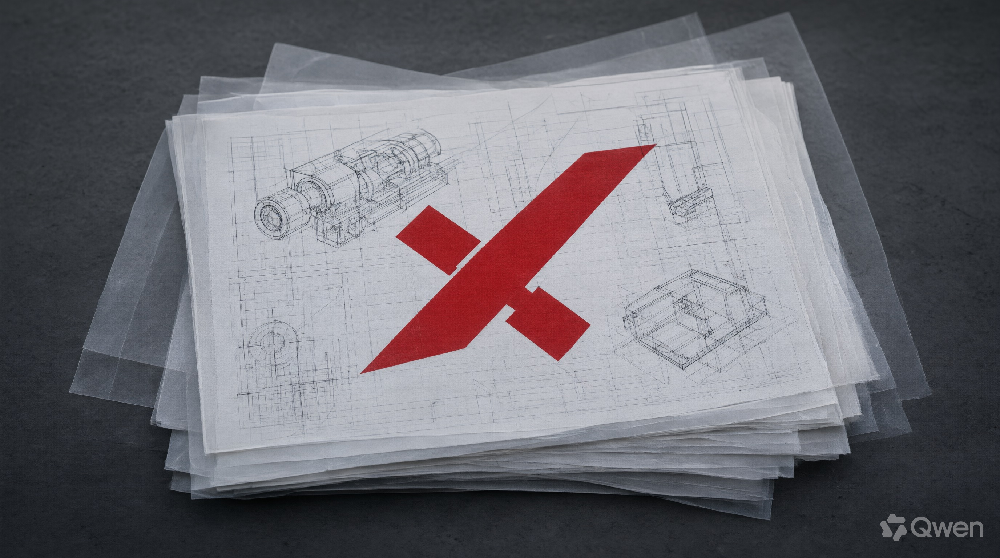

B2B · Воркшоп для предприятий · 16 академических часов
Цифровой двойник не запустится, если ТЗ математически некорректно
Аудит до разработки: проверяем совместность, единственность и устойчивость модели. За 16 академических часов ваша команда получает контрольный лист и регламент математической приёмки ТЗ — без привлечения внешних IT-архитекторов и физиков процессов.
Запросить пилотный аудит ТЗПредварительный математический скрининг одного ТЗ — бесплатно.
Ошибка в модели обнаруживается слишком поздно — уже в разработке
20–30% ТЗ на цифровые двойники возвращаются на доработку. Система уравнений оказывается вырожденной, решение — неединственным или отсутствует, а критерий эффективности — незнакоопределённым. На бумаге модель выглядит рабочей. В разработке — останавливает проект, тянет за собой переделку ТЗ и сдвигает сроки CAPEX.

Проблема не в софте и не в описании процесса. Проблема в математике
IT-подрядчик отвечает за архитектуру системы, технолог — за физику процесса. Но если система уравнений вырождена, а критерий эффективности не является знакоопределённым, — ни софт, ни описание процесса этого не исправят. Корректность модели проверяется ядром линейной алгебры: ранги матриц, теорема Кронекера–Капелли, критерий Сильвестра, главные миноры. Именно этот слой чаще всего выпадает из приёмки ТЗ.
- Ранги матриц и совместность системы уравнений
- Теорема Кронекера–Капелли — есть ли решение вообще
- Единственность решения и вырожденность модели
- Критерий Сильвестра и главные миноры — знакоопределённость критерия эффективности
Математический аудит ТЗ на цифровой двойник — 16 академических часов
Интенсивный воркшоп для инженерной команды заказчика. Разбираем ТЗ вашего предприятия, а не абстрактные примеры. Проверяем модель на совместность, единственность и устойчивость до того, как она уйдёт в разработку.
На выходе — не «знания», а документ, который остаётся у предприятия
По итогам воркшопа ваша команда получает отчуждаемый инструмент: «Контрольный лист и регламент математической приёмки ТЗ на цифровой двойник». Это не конспект лекции. Это рабочий документ, по которому вы принимаете следующие ТЗ — без нас.
- Контрольный лист проверки ТЗ (чек-лист приёмки)
- Регламент математической приёмки — кто, что и в какой момент проверяет
- Критерии «стоп» — когда ТЗ нельзя отдавать в разработку
Документ остаётся у предприятия и применяется к каждому следующему ТЗ на цифровой двойник.
Для кого
- Главный инженер предприятия
- Директор по производству
- Руководитель проектов модернизации и CAPEX
- Инженерная команда, которая готовит или принимает ТЗ на цифровой двойник
Не для кого
- IT-подрядчики и интеграторы
- Специалисты, которым нужен общий курс по линейной алгебре
- Проекты без привязки к реальному ТЗ
Три формата — под стадию вашего проекта
Частые вопросы
Почему 16 часов?
Этого достаточно, чтобы разобрать реальное ТЗ, проверить совместность, единственность, устойчивость и критерий эффективности, и передать команде рабочий регламент приёмки. Мы не растягиваем программу ради «академичности».
Почему без физиков и IT-архитекторов?
Потому что проблема, которую мы решаем, — математическая. Если модель вырождена или критерий незнакоопределён, физика процесса и архитектура софта этого не исправят.
Как измерим эффект?
До воркшопа — доля ТЗ, возвращённых на доработку. После — количество ТЗ, отклонённых на этапе математической приёмки до запуска в разработку. Контрольный лист даёт измеримый критерий «стоп».
Что если модель уже в разработке?
Тем важнее остановиться сейчас. Аудит покажет, какие части модели математически некорректны, и что можно исправить до того, как переделка станет дороже.
Пришлите ТЗ на предварительный математический скрининг
Посмотрим на модель до того, как она уйдёт в разработку. Ответим, есть ли математические риски и стоит ли идти на полный аудит.